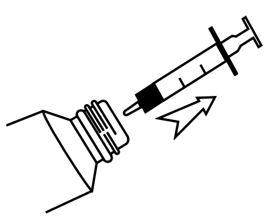

Canabidiol - Solução
Canabidiol - Solução
Canabidiol Prati-Donaduzzi 20 mg/mL ou 50 mg/mL:
Solução oral em embalagem com 1 frasco de 30 mL acompanhado de 1, 2 ou 3 seringas
dosadoras.
Canabidiol Prati-Donaduzzi 200 mg/mL:
Solução oral em embalagem com 1 frasco de 30 mL acompanhado de seringa dosadora.
USO ORAL.
-
Canabidiol Prati-Donaduzzi deve ser administrado por via oral com o auxílio de seringa dosadora, logo após as refeições.
Para administrar este produto, gire a tampa no sentido anti-horário para romper o lacre.
1. Coloque a tampa interna que acompanha a seringa dosadora no bocal do frasco de Canabidiol Prati-Donaduzzi.2. Encaixe a seringa dosadora no orifício da tampa interna do frasco.
3. Confirme se o êmbolo da seringa está totalmente para baixo.
4. Segure a seringa e cuidadosamente vire o frasco de cabeça para baixo.
5. Puxe lentamente o êmbolo, para que a seringa se encha com o produto de Cannabis, medindo a quantidade exata em mL, até a marca correspondente à dosagem indicada pelo médico para o paciente.6. Desvire o frasco e retire a seringa dosadora.
7. Se perceber a presença de bolha de ar na seringa, encaixe novamente a seringa no frasco e com o frasco de cabeça para baixo, empurre o êmbolo, de modo que todo o líquido volte para o frasco.
8. Repita o passo 5 até que consiga dosar o produto sem a presença de bolhas.
9. Administre o conteúdo da seringa diretamente na boca do paciente. Jamais direcione o produto para a região da garganta, pois isto pode causar afogamento.10. Tampe o frasco sem retirar a tampa interna.
11. Após a administração, lave a seringa com água corrente e detergente neutro e, guarde-a na respectiva caixa para que possa ser utilizada novamente.
Não se recomenda agitar o produto.
Não utilize a seringa se estiver molhada. Se tiver água dentro da seringa, esta poderá afetar as características do produto de Cannabis.
A seringa dosadora é de uso exclusivo para administração de Canabidiol Prati-Donaduzzi e não deve ser utilizada para administração de outros produtos.
O manuseio da seringa dosadora deve ser feito somente por adultos.
Posologia
A posologia de Canabidiol Prati-Donaduzzi pode variar de acordo com características e gravidade da patologia, idade, peso corporal, uso de medicamentos pelo paciente e resposta clínica.
A literatura cita a administração de canabidiol em doses entre 2,5 e 25 mg/Kg/dia, sendo a dose aumentada gradualmente. No entanto, o médico deve definir a dose de tratamento com base na resposta clínica favorável e tolerabilidade ao produto de Cannabis, sendo necessário monitoramento periódico das funções hepáticas. Caso seja necessária a interrupção da utilização do produto, recomenda-se que a dose seja reduzida gradualmente e nunca abruptamente.
Siga a orientação de seu médico, respeitando sempre os horários, as doses e a duração do tratamento.
Não interrompa o tratamento sem o conhecimento do seu médico.
-
Pacientes com histórico de hipersensibilidade e alergia a qualquer um dos componentes da fórmula não devem fazer uso de Canabidiol Prati-Donaduzzi.
Este produto não deve ser utilizado por pacientes usuários de drogas de abuso.
Este produto não deve ser utilizado em crianças menores de 2 (dois) anos de idade. -
Cada mL de Canabidiol Prati-Donaduzzi 20 mg/mL solução contém:
canabidiol..................................20 mg
veículo q.s.p.............................1 mL
Excipientes: óleo de milho e butil-hidroxianisol.
Cada mL de Canabidiol Prati-Donaduzzi 50 mg/mL solução contém:
canabidiol...................................50 mg
veículo q.s.p.............................1 mL
Excipientes: óleo de milho e butil-hidroxianisol.
Cada mL de Canabidiol Prati-Donaduzzi 200 mg/mL solução contém:
canabidiol.................................. 200 mg
veículo q.s.p............................ 1 mL
Excipientes: óleo de milho e butil-hidroxianisol.